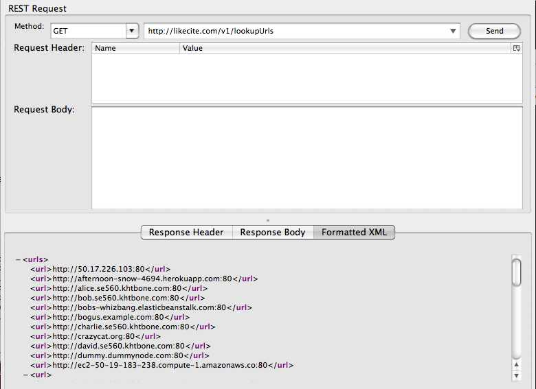
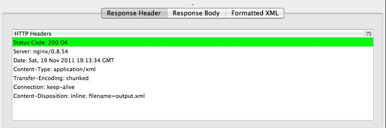

Submitting a GET request to this url returns a list of urls that this node is aware of. The list of urls listed here is gathered in one of two ways:


Here is a textual representation of the urls returned by this query.
<?xml version="1.0" encoding="utf-8"?>
<urls>
<url>http://50.17.226.103:80</url>
<url>http://afternoon-snow-4694.herokuapp.com:80</url>
<url>http://alice.se560.khtbone.com:80</url>
<url>http://bob.se560.khtbone.com:80</url>
<url>http://bobs-whizbang.elasticbeanstalk.com:80</url>
<url>http://bogus.example.com:80</url>
<url>http://charlie.se560.khtbone.com:80</url>
<url>http://crazycat.org:80</url>
<url>http://david.se560.khtbone.com:80</url>
<url>http://dummy.dummynode.com:80</url>
<url>http://ec2-50-19-183-238.compute-1.amazonaws.co:80</url>
<url>http://ec2-50-19-183-238.compute-1.amazonaws.com:80</url>
<url>http://flaky.se560.khtbone.com:80</url>
<url>http://greffin-se560.elasticbeanstalk.com:80</url>
<url>http://jh560.elasticbeanstalk.com:80</url>
<url>http://likecite.com:80</url>
<url>http://localhost:80</url>
<url>http://localhost:8080</url>
<url>http://localhost:9080</url>
<url>http://p2p-node-wt.appspot.com:80</url>
<url>http://phongs00webapp0.appspot.com:80</url>
<url>http://pure-summer-1824.herokuapp.com:80</url>
<url>http://se560.casey.elasticbeanstalk.com:80</url>
<url>http://se560casey.elasticbeanstalk.com:80</url>
<url>http://se560cooperj.elasticbeanstalk.com:80</url>
<url>http://se560cp.elasticbeanstalk.com:80</url>
<url>http://se560dwozniakv1.elasticbeanstalk.com:80</url>
<url>http://se560.elasticbeanstalk.co:80</url>
<url>http://se560.elasticbeanstalk.com:80</url>
<url>http://se560jg4.elasticbeanstalk.com:80</url>
<url>http://se560mod.elasticbeanstalk.com:80</url>
<url>http://shah-se560.elasticbeanstalk.com:80</url>
<url>http://solon.cdm.depaul.edu:80</url>
<url>http://solon.cdm.depaul.edu:9080</url>
<url>http://testnode.fake.com:80</url>
<url>http://www.fake.com:80</url>
<url>http://zahg560.elasticbeanstalk.com:80</url>
<url>http://zahse560class.elasticbeanstalk.com:80</url>
</urls>